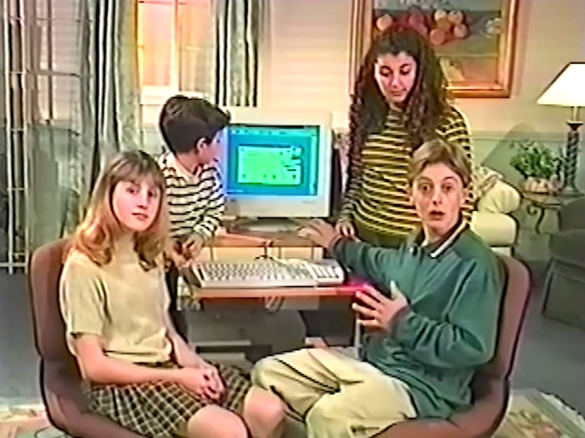
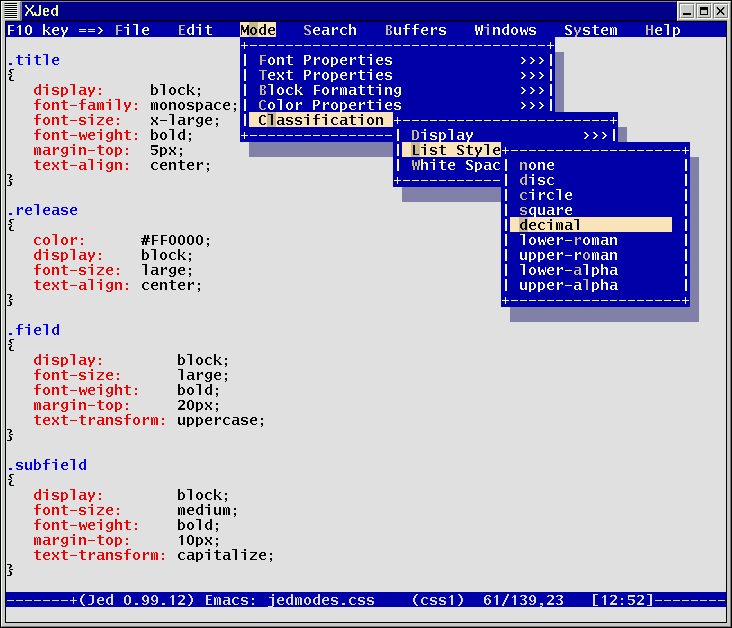
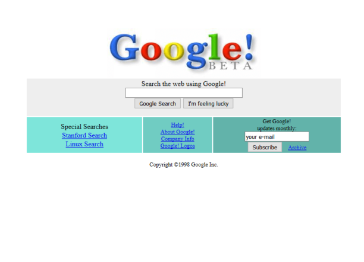
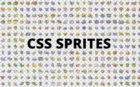
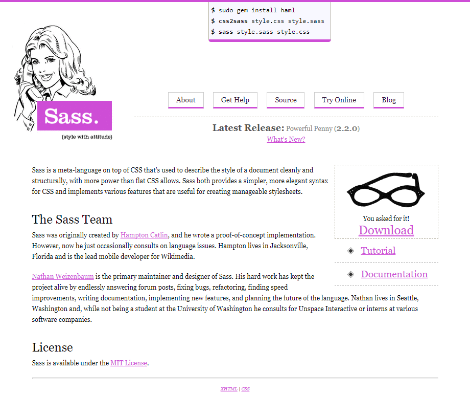
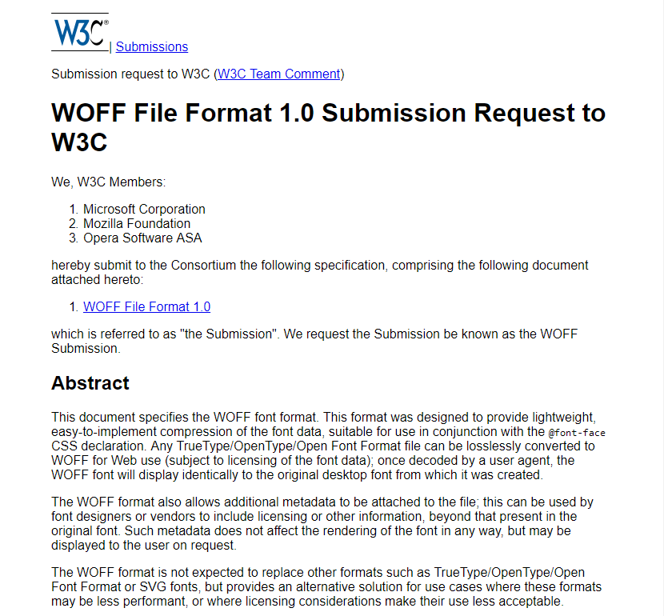
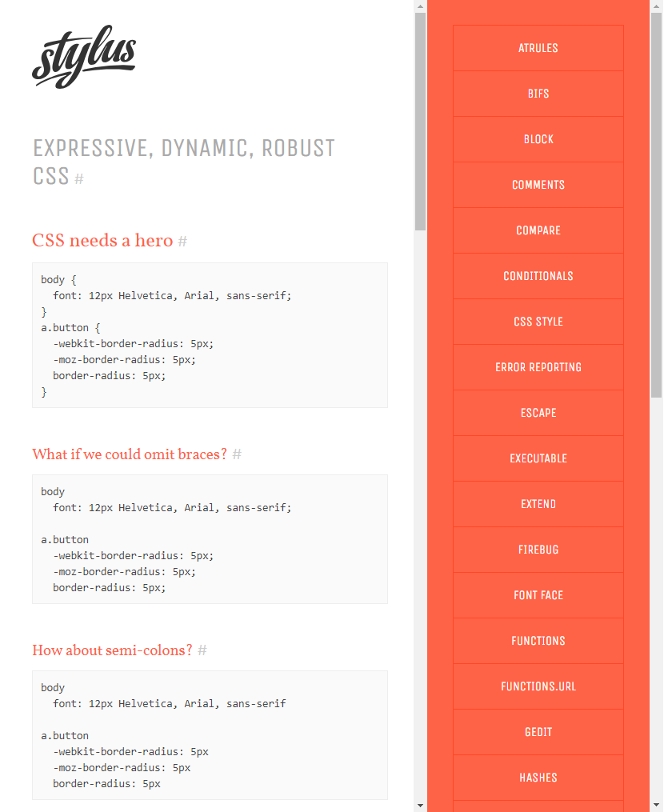
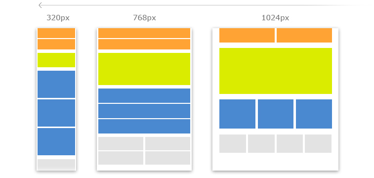
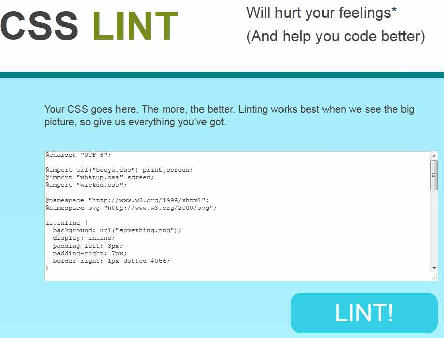

1990
Début d'une ère
C'est lors de cette décennie que Tim Berners Lee crée le Net. C'est une période où beaucoup de concepts et idées émmergent et se mettent en place. C'est un époque où l'on utilisait principalement du HTML pour créer des sites internet.
1994
WWW par Tim Berners Lee
Cette année là, le World Wide Web Consortium est crée. Il est abrégé par le sigle W3C, est un organisme de standardisation à but non lucratif, fondé en octobre 1994 chargé de promouvoir la compatibilité des technologies du World Wide Web telles que HTML5, HTML, XHTML, XML, RDF, SPARQL, CSS, XSL, PNG, SVG et SOAP. Fonctionnant comme un consortium international, il regroupe, au 14 août 2020, 434 entreprises partenaires. Le leitmotiv du W3C est « Un seul web partout et pour tous ».
1997
CSS1
CSS1, La spécification CSS finale a été publiée le 17 décembre 1996, il définit une cinquantaine de propriétés. Il peut se définir comme un "mécanisme de feuille de style simple, permettant aux auteurs et aux lecteurs d'attacher des styles au document HTML. Ce langage est très simple car il peut être facilement lu et écrit. A cette époque là, on évoque pas encore le terme dde "mise en page" : la propriété float sera par la suite massivement utilisée.
1998
Rivalité entre Netscape et Microsoft
Fin de la guerre entre les navigateurs. En 1998, la guerre des navigateurs s'achève et oppose désormais les navigateurs Netscape et Microsoft. Cette année là ils parviennent alors à proposer un langage plus complet qui a facilité la première publication de « Test suite for Cascading Style Sheets (CSS) Level 1 » créée principalement par Eric Meyer.
2000
Vers toujours plus de progrés.
En 2000, internet et le web est déjà trés présent dans la société en particulier dans les entreprises. Les années 2000 sont aussi une période très importante de l'évolution des differents langages.
2004
CSS Sprites
Le 5 avril 2004, le CSS Sprites à été crée par David Shea. Un article a d'ailleurs été publié dans le webzine "A List Apart", « CSS Sprite : Image Slicing’s Kiss of Death ». Cet article évoque la technique appelée CSS Sprites dont la base était de connecter plusieurs éléments graphiques plus petits sur une image plus grande. Ces éléments graphiques sont après placés sur le site à l’aide de la fonction d’arrière-plan. C’est grâce aux CSS Sprites qu’un site se charge plus rapidement car il ne telecharge pas l’image ce qui réduit le nombre de requêtes.
2006
SASS 0.1.0
Le 5 octobre 2006, Sass 0.1.0 a été crée. C'est un processeur CSS crée par Hampton Catlin et Natalie Weizenbaum, ce sont des feuilles de styles caractérisées « géniales » sur le plan de la syntaxe. Ce préprocesseur est donc un langage de script interprété ou compilé en styles en cascade. A cette syntaxe on va y ajouter des variables, des mixins, un héritage de sélecteur, des règles d’imbrication, des opérateurs arithmétiques et d’autres fonctionnalités.
2009

Block Element Modifier
En mars 2009, il y a eu un gros progrés, en effet, BEM a enfin été mis au point. En 2005, une équipe de développeurs du moteur de recherche russe Yandex a commence à travailler sur une nouvelle méthodologie qui permettait de nommer les classes en CSS. En 2009, cette nouvelle méthodologie CSS a été appelée BEM, ce qui signifie Block, Element, modifier. A partir de ce moment là le CSS, le Javascript et les images ont été stockées dans des répertoires séparés.
Less 1.0
En juin 2009, e processeur CSS appelé Less 1.0 a été crée par Alexis Sellier. Alexis Sellier propose alors un langage de style dynamique pour les styles en cascade. Ce langage a été influencé par le processeur Sass qui existait déjà. Mais il y a plusieurs variables telles que des mixins, des calculs arithmétiques, des règles d’imbrication et des fonctions de CSS qui y ont été rajoutées.
CSS Flexible Box Layout
Le 23 juillet 2009 encore une grande avancée dans le langafe css. Dans l’évolution des CSS il y a la sortie des CSS Flexible Box Layout, il a été publié par le W3C. Cette fonctionnalité est une nouvelle manière de faire une page web avec des alignements plus facile et une répartition des espaces par rapport à la résolution et à la taille de l’écran. Ces fonctionnalités s’appellent « flexbox » qui sont aujourd’hui pris en charge dans la plupart des navigateurs.
2010
WOFF 1.0
Le 08 mars 2010 WOFF, une spécification d’un nouveau format de police ouvert pour le web, enfin adaptée au W3C. Il a été conçu pour fournir une compression légère, facile et adaptée pour l’utilisation des règles CSS. Il permet aussi de joindre des métadonnées supplémentaires au fichier seulement si l’utilisateur le demande. Ce format n’est pas destiné à remplacer d’autres formats tels que les polices Font Format ou polices SVG, mais il propose une solution de rechange pour le cas où ces formats rendent leur utilisation moins acceptable.
2011
Stylus 0.0.1
Ce début d'année 2011, Stylus 0.0.1 a été crée par TJ Holowaychuk. Stylus est un langage de style dynamique pour les styles en cascade. Sa syntaxe était basée sur les processeurs Sass et Less qui existaient déjà. Il est d’ailleurs considéré comme la quatrième syntaxe de pré-processeur CSS la plus utilisée à l’époque. Le stylet permet de définir des variable mais contrairement à ses cousins Less et Sass, il n’utilise pas de symbole pour définir des variables. Elle se fait donc automatiquement.
Bootstrap
Le 19 août 2011, Les développeurs Otto et Thorton ont commencé à créer le framework CSS Bootstrap. A l’origine, le cadre a été développé à l ’origine pour aider à maintenir la cohérence du code HTML/CSS et Javascript. Bootstrap est sorti en tant qu’outil open source et aujourd’hui c’est un des CSS les plus populaires parmi les concepteurs web. En 2012, c’est Bootstrap 2 qui est sorti et à pris en charge la mise en page web réactive.
2012
Media Queries
19/06/2012 -> Media Queries : Les médias queries est une recommandation officielle adaptée au W3C. Ce module de média queries CSS3 propose un rendu de page web adaptable en fonction de plusieurs facteurs tels que la résolution ou la taille de l’écran. Ces requêtes multimédias sont une des techniques de base utilisées dans la conception des sites responsive.
2013
CSS Lint
Nicolle Sullivan est une passionnée de CSS et elle es auteure, elle a lancé son projet open source « Object-Oriented CSS ». Le CSS Lint est un outil qui permet de nous signaler les problèmes de son code CSS. Cet outil, vérifie donc la syntaxe de base et applique un ensemble de règles au code qui cherche des problématiques ou alors des signes d’inefficacité.